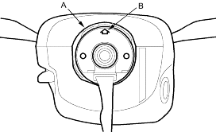
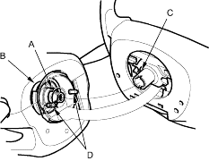
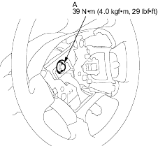

- Before installing the steering wheel, make sure the front wheels are aligned straight ahead, then centre the cable reel (A). Do this by first rotating the cable reel clockwise until it stops. Then rotate it counter-clockwise about 2 and a half turns. The arrow mark (B) on the cable reel label point should point straight up.

- Position the 2 tabs (A) of the turn signal cancelling sleeve (B) as shown, and install the steering wheel on to the steering column shaft, making sure the steering wheel hub (C) engages the pins (D) of the cable reel and tabs of the cancelling sleeve. Do not tap on the steering wheel or steering column shaft when installing the steering wheel.

- Install the steering wheel bolt (A) or nut and tighten it.

- Connect the horn switch connector.
- Install the driver's airbag, and confirm that the system is operating properly (see page 23-165).
- Check the horn and turn signal cancelling for proper operation.